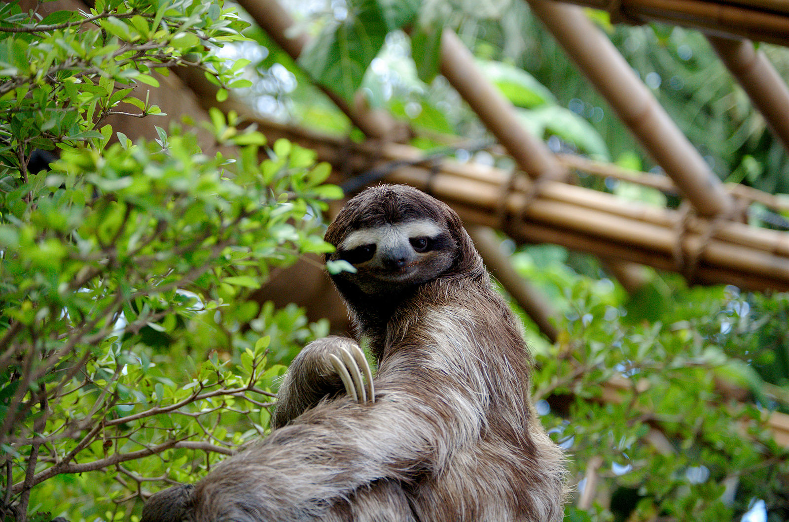
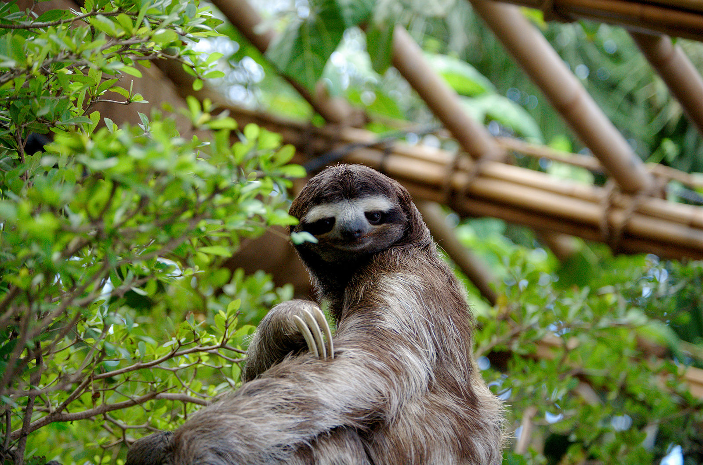

Sloths are mammals known for their slowness and for hanging upside down from trees. They live in the rainforests of South and Central America. The sloth's coat is shaggy and host to green algae.
Sloths are slow due to an evolutionary adaption to their low-energy diets of leaves and to avoid detection of predators. Because their diet gives them minimal energy and nutrition, they only urinate and defecate once a week.
Despite being known as slow and low-energy mammal, sloths only sleep ten hours a day. And being nocturnal they do sleep those ten hours during the day.
 
